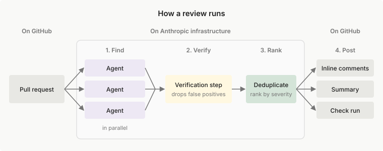

Code Review
使用 Code Review 捕获 GitHub Pull Request 中的错误：Claude 审查每项更改、验证其发现，并发布内联评论。适用于 Team 和 Enterprise 套餐
借助 Code Review，Claude 会审查您 GitHub 仓库中的 Pull Request。多个 Agent 会结合周围代码阅读每项更改，查找逻辑错误、安全漏洞或破损的边界情况等问题。验证步骤会在报告发现之前对照代码检查这些发现。
发现以内联评论的形式出现在相关代码行上，按严重程度排序，并在 Pull Request 上附带摘要和检查运行。审查永远不会批准或阻止 Pull Request，因此合并的决定权仍在您的团队手中。

Code Review 使用 AI 审查代码，可能会遗漏错误、安全漏洞或其他问题。没有发现的审查并不意味着您的代码没有错误或是安全的。
要启用 Code Review，需由您 Claude 组织的 Owner 按照设置 Code Review进行操作。Claude 也可以在不使用此服务的情况下审查代码。在任何套餐上，都可以在 Claude Code 会话中运行 /code-review，或比较所有选项。
可用性
在设置 Code Review 之前，请确认您的组织符合条件：
- 套餐：Team 和 Enterprise
- 代码托管平台：托管在 GitHub 上的仓库，包括 GitHub Enterprise Server 和启用数据驻留的 GitHub Enterprise Cloud。对于数据驻留，请让 Owner 按照 GitHub Enterprise Server 管理员设置操作，并输入您企业的
ghe.com主机名。 - 数据保留：对于启用了 Zero Data Retention 或应用了 HIPAA 配置的组织，Code Review 不可用，且不在 Anthropic 的业务伙伴协议（BAA）涵盖范围内。
- 加密密钥：对于使用客户管理加密密钥（CMEK）的组织，Code Review 暂不可用。
- 云提供商：即使您的开发人员通过 Amazon Bedrock、Google Cloud 的 Agent Platform 或 Microsoft Foundry 使用 Claude Code，您也需要一个使用上述套餐之一的 Claude 组织
设置和使用 Code Review
根据您需要完成的操作选择相应页面：
[card] 设置 Code Review
检查要求、安装 Claude GitHub App，并选择仓库、审查级别以及审查的运行时机
[card] 自定义 Code Review
通过仓库中的
REVIEW.md和CLAUDE.md文件调整标记的内容[card] 在 Pull Request 上阅读和请求审查
阅读发现及其严重程度，并通过评论请求再次审查
[card] Code Review 故障排除
修复未启动、失败或因预算而被跳过的审查
[card] Code Review 成本和使用情况
了解审查的计费方式、估算支出、设置每月支出上限并跟踪审查活动
审查工作原理
默认情况下，Code Review 专注于正确性：会破坏生产的错误，而不是格式偏好或缺失的测试覆盖。要更改其标记的内容，请向仓库添加指导文件。
审查在 Anthropic 基础设施上分四个阶段运行：
- 查找：多个 Agent 并行检查 diff 和周围代码。
- 验证：验证步骤对照代码检查候选发现，并过滤掉误报。
- 排序：剩余的发现经过去重并按严重程度排序。
- 发布：审查将其结果发布到 Pull Request 上。
每次审查都会在 Pull Request 上留下以下内容：
- 发现：相关代码行上的内联评论，并在审查正文中附带摘要
- 检查运行：名为 Claude Code Review，其详细信息中列出了各项发现。检查运行不会以失败结束。
- 代替发现的说明：当检查运行的标题显示 Code review found no issues 时发布
Code Review 会选择运行审查所用的 Claude 模型，其管理设置中不提供模型选择。要让审查更深入或更轻量，请更改审查级别。
Owner 启用 Code Review 后，每个仓库都有一个设置，用于指定审查的运行时机：在 Pull Request 打开时运行一次、每次推送后运行，或仅在请求时运行。无论选择哪一项，对仓库具有写入权限的人员都可以在 Pull Request 上评论 @claude review 来启动审查。
审查级别
审查级别决定每次审查的深入程度，审查越深入，成本越高：
- Quick：较轻量的检查。速度最快，成本最低。
- Standard：在深度、速度和成本之间取得平衡。默认级别。
- Deep：最深入的检查。耗时最长，成本最高。
Owner 可以为组织选择一个级别，也可以为单个仓库指定其自己的级别，例如为常规代码库使用 Quick，为关键代码库使用 Deep。有关影响每次审查成本的其他因素，请参阅 Code Review 成本和使用情况。
审查可以访问的内容
审查通过 Owner 在设置期间安装的 Claude GitHub App 访问您的仓库：
- 运行位置：在 Anthropic 基础设施上的托管环境中运行。审查不会在自托管环境中运行。
- 读取和写入的内容：在审查过程中，对仓库的访问是只读的，审查不会推送提交。在 Pull Request 上，它会发布评论和检查运行，解决自己之前的评论线程，并可以用 👀 回应评论命令。该应用本身拥有由其他 Claude 功能共享的更广泛的权限集。
- 检查代码的方式：审查通过阅读 diff 和周围代码进行，不会构建或运行您的代码。
谁可以控制审查
- 谁可以启动审查：在自动运行审查的仓库中，打开 Pull Request 或向其推送都会启动审查，草稿和 fork 除外。在某些推送之后，Code Review 会改为保留之前的结果。评论命令只有在来自对仓库具有写入权限的人员时才会启动审查。
- 遵循哪些指令：来自基础分支或默认分支的
REVIEW.md，绝不会来自 Pull Request 自身的更改。
比较获取审查的方式
要找出您可以使用的选项，请根据您的套餐和代码托管平台查看 谁可以使用 一列：
| 选项 | 启动审查的方式 | 运行位置 | 谁可以使用 |
|---|---|---|---|
| Code Review | 按各仓库设置的 Pull Request 活动，或 @claude review 评论 |
Anthropic 基础设施 | 拥有 GitHub 仓库、使用 Team 或 Enterprise 套餐的组织，在 Owner 启用后即可使用 |
/code-review |
您在自己的分支上运行该命令 | 您的 Claude Code 会话 | 任何人，任何套餐 |
| Ultrareview | 您从 Claude Code 启动 | 云沙箱 | 需要使用 claude.ai 账户登录。有关不可用的情况，请参阅 Ultrareview |
| 在您自己的 CI 中运行 Claude，使用 GitHub Actions 或 GitLab CI/CD | 您的流水线事件，例如每个 Pull Request 或 merge request | 您自己的 CI 运行器 | 在 GitHub 或 GitLab 上拥有 Claude API 密钥或云提供商凭据的任何人 |
| 您自己的审查器，作为子代理或 skill | 您或 Claude 在会话中调用它 | 您运行 Claude Code 的任何位置 | 任何编写了审查器的人 |
相关资源
- GitHub Enterprise Server：在自托管 GitHub 实例上使用 Code Review
- GitHub App 权限：Claude GitHub App 请求的完整权限集
- How Anthropic secures its AI-native software development lifecycle：自动化审查如何作为 Anthropic 安全开发流程的一个层级